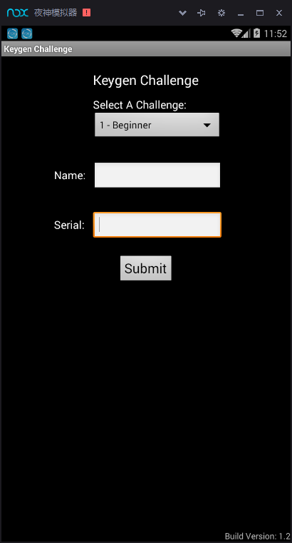
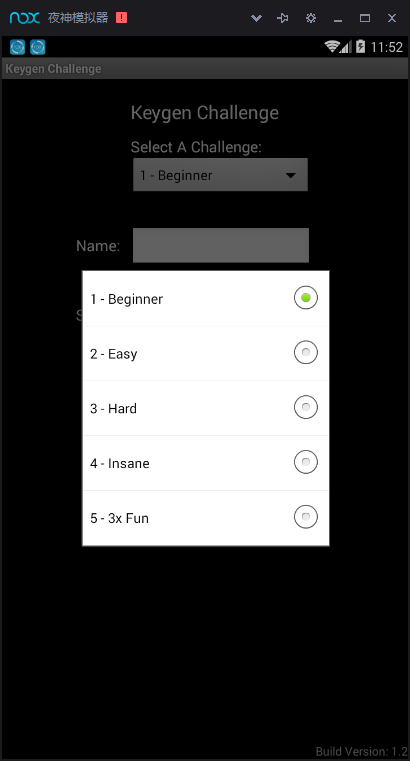

总共5关
package com.me.keygen.verifiers.challenge;
import com.me.keygen.verifiers.KeyVerifier;
public class Challenge1Verifier implements KeyVerifier {
public boolean isValid(String name, String serial) {
int answer = 0;
for (int x = 0; x < name.length(); x++) {
char current = name.charAt(x);
answer = (answer + (current * current)) ^ current;
}
try {
if (Integer.parseInt(serial) == answer) {
return true;
}
} catch (Exception e) {
}
return false;
}
}
让他返回true就行，呐，这个好办：
/**
* Created by mask on 2017/3/25.
*/
public class test_one {
public static void main(String[] args){
int v0 = 0;
String arg6 = "Mask";
int v3;
for (v3 = 0;v3<arg6.length();++v3){
int v1 = arg6.charAt(v3);
v0 = v0+v1*v1^v1;
}
System.out.println(v0);
}
}
结果：
"C:\Program Files\Java\jdk1.8.0_102\bin\java" -Didea.launcher.port=7537 "-Didea.launcher.bin.path=I:\IntelliJ IDEA Community Edition 2016.3\bin" -Dfile.encoding=UTF-8 -classpath "C:\Program Files\Java\jdk1.8.0_102\jre\lib\charsets.jar;C:\Program Files\Java\jdk1.8.0_102\jre\lib\deploy.jar;C:\Program Files\Java\jdk1.8.0_102\jre\lib\ext\access-bridge-64.jar;C:\Program Files\Java\jdk1.8.0_102\jre\lib\ext\cldrdata.jar;C:\Program Files\Java\jdk1.8.0_102\jre\lib\ext\dnsns.jar;C:\Program Files\Java\jdk1.8.0_102\jre\lib\ext\jaccess.jar;C:\Program Files\Java\jdk1.8.0_102\jre\lib\ext\jfxrt.jar;C:\Program Files\Java\jdk1.8.0_102\jre\lib\ext\localedata.jar;C:\Program Files\Java\jdk1.8.0_102\jre\lib\ext\nashorn.jar;C:\Program Files\Java\jdk1.8.0_102\jre\lib\ext\sunec.jar;C:\Program Files\Java\jdk1.8.0_102\jre\lib\ext\sunjce_provider.jar;C:\Program Files\Java\jdk1.8.0_102\jre\lib\ext\sunmscapi.jar;C:\Program Files\Java\jdk1.8.0_102\jre\lib\ext\sunpkcs11.jar;C:\Program Files\Java\jdk1.8.0_102\jre\lib\ext\zipfs.jar;C:\Program Files\Java\jdk1.8.0_102\jre\lib\javaws.jar;C:\Program Files\Java\jdk1.8.0_102\jre\lib\jce.jar;C:\Program Files\Java\jdk1.8.0_102\jre\lib\jfr.jar;C:\Program Files\Java\jdk1.8.0_102\jre\lib\jfxswt.jar;C:\Program Files\Java\jdk1.8.0_102\jre\lib\jsse.jar;C:\Program Files\Java\jdk1.8.0_102\jre\lib\management-agent.jar;C:\Program Files\Java\jdk1.8.0_102\jre\lib\plugin.jar;C:\Program Files\Java\jdk1.8.0_102\jre\lib\resources.jar;C:\Program Files\Java\jdk1.8.0_102\jre\lib\rt.jar;C:\Users\mask\Desktop\Blog\Mask_Blog\content\AliCTF_Timer\test\out\production\test;I:\IntelliJ IDEA Community Edition 2016.3\lib\idea_rt.jar" com.intellij.rt.execution.application.AppMain test_one
39996
Process finished with exit code 0
package com.me.keygen.verifiers.challenge;
import com.me.keygen.verifiers.KeyVerifier;
public class Challenge2Verifier implements KeyVerifier {
public boolean isValid(String name, String serial) {
if (name.length() < 4) {
return false;
}
int x;
name = name.toUpperCase();
long nameSum = 0;
for (x = 0; x < name.length(); x++) {
nameSum = ((nameSum + ((long) name.charAt(x))) * 3) - 64;
}
String sumString = Long.toString(nameSum);
int finalSum = 0;
for (x = 0; x < sumString.length(); x++) {
finalSum += sumString.charAt(x) - 48;
}
for (x = 0; x < serial.length(); x++) {
finalSum -= serial.charAt(x) - 64;
}
if (finalSum == 0) {
return true;
}
return false;
}
}
这里稍微变通了一下，finalSum先从0通过一直加[ sumString.charAt(x) - 48]，然后再通过一直减[serial.charAt(x) - 64]变为0，那么，我们知道字符串sumString为"6404",要求serial的话，只需要将sumString的每一项对应的ascii值转换为十进制，然后每个加上(64-48)16,然后再转换为相应的ascii码即可：
/**
* Created by mask on 2017/3/25.
*/
public class test_two {
public static void main(String[] args){
boolean v5 = false;
String name = "Mask";
name = name.toUpperCase();
long v1 = 0;
int v4;
for (v4 = 0;v4<name.length();++v4){
v1 = (v1 + (((long)name.charAt(v4)))) * 3 - 64;
}
String v3 = Long.toString(v1);
int v0 = 0;
//System.out.println(v3);
/*for(v4 = 0; v4 < v3.length(); ++v4) {
v0 += v3.charAt(v4) - 48;
}
*/
System.out.println(v3);
System.out.println((char)(v3.charAt(0)+16));
System.out.println((char)(v3.charAt(1)+16));
System.out.println((char)(v3.charAt(2)+16));
System.out.println((char)(v3.charAt(3)+16));
}
}
结果为：
"C:\Program Files\Java\jdk1.8.0_102\bin\java" -Didea.launcher.port=7539 "-Didea.launcher.bin.path=I:\IntelliJ IDEA Community Edition 2016.3\bin" -Dfile.encoding=UTF-8 -classpath "C:\Program Files\Java\jdk1.8.0_102\jre\lib\charsets.jar;C:\Program Files\Java\jdk1.8.0_102\jre\lib\deploy.jar;C:\Program Files\Java\jdk1.8.0_102\jre\lib\ext\access-bridge-64.jar;C:\Program Files\Java\jdk1.8.0_102\jre\lib\ext\cldrdata.jar;C:\Program Files\Java\jdk1.8.0_102\jre\lib\ext\dnsns.jar;C:\Program Files\Java\jdk1.8.0_102\jre\lib\ext\jaccess.jar;C:\Program Files\Java\jdk1.8.0_102\jre\lib\ext\jfxrt.jar;C:\Program Files\Java\jdk1.8.0_102\jre\lib\ext\localedata.jar;C:\Program Files\Java\jdk1.8.0_102\jre\lib\ext\nashorn.jar;C:\Program Files\Java\jdk1.8.0_102\jre\lib\ext\sunec.jar;C:\Program Files\Java\jdk1.8.0_102\jre\lib\ext\sunjce_provider.jar;C:\Program Files\Java\jdk1.8.0_102\jre\lib\ext\sunmscapi.jar;C:\Program Files\Java\jdk1.8.0_102\jre\lib\ext\sunpkcs11.jar;C:\Program Files\Java\jdk1.8.0_102\jre\lib\ext\zipfs.jar;C:\Program Files\Java\jdk1.8.0_102\jre\lib\javaws.jar;C:\Program Files\Java\jdk1.8.0_102\jre\lib\jce.jar;C:\Program Files\Java\jdk1.8.0_102\jre\lib\jfr.jar;C:\Program Files\Java\jdk1.8.0_102\jre\lib\jfxswt.jar;C:\Program Files\Java\jdk1.8.0_102\jre\lib\jsse.jar;C:\Program Files\Java\jdk1.8.0_102\jre\lib\management-agent.jar;C:\Program Files\Java\jdk1.8.0_102\jre\lib\plugin.jar;C:\Program Files\Java\jdk1.8.0_102\jre\lib\resources.jar;C:\Program Files\Java\jdk1.8.0_102\jre\lib\rt.jar;C:\Users\mask\Desktop\Blog\Mask_Blog\content\AliCTF_Timer\test\out\production\test;I:\IntelliJ IDEA Community Edition 2016.3\lib\idea_rt.jar" com.intellij.rt.execution.application.AppMain test_two
6404
F
D
@
D
package com.me.keygen.verifiers.challenge;
import com.me.keygen.verifiers.KeyVerifier;
import java.io.ByteArrayOutputStream;
import java.nio.charset.Charset;
import java.security.MessageDigest;
public class Challenge3Verifier implements KeyVerifier {
byte[] secretBytes = this.secretKey.getBytes(Charset.forName("US-ASCII"));
String secretKey = "KeygenChallengeNumber3";
public boolean isValid(String name, String serial) {
String[] parts = serial.split("-");
if (parts.length != 8) {
return false;
} //说明密码有8段，每一段用"-"分割开
int x;
for (String matches : parts) {
if (!matches.matches("[0-9A-F][0-9A-F][0-9A-F][0-9A-F]")) { //正则匹配，每一段都是在0-9，A-F内取值
return false;
}
}
ByteArrayOutputStream baos = new ByteArrayOutputStream();
baos.write(49);
for (x = 0; x < this.secretBytes.length; x += 2) {
baos.write(this.secretBytes[x]);
baos.write(x + 1);
}
for (x = 1; x < this.secretBytes.length; x += 2) {
baos.write(this.secretBytes[x]);
baos.write(x + 1);
}
baos.write(48);
baos.write(48);
x = 0;
while (x < parts.length / 2) {
try {
baos.write(parts[x].getBytes(Charset.forName("US_ASCII")));
baos.write(45);
x++;
} catch (Exception e) {
return false;
}
}
try {
baos.write(this.secretBytes);
byte[] result = new byte[32];
try {
MessageDigest md = MessageDigest.getInstance("MD5");
md.update(baos.toByteArray());
String foo = bytesToHex(md.digest()).toUpperCase();
String lastHalf = serial.substring(serial.length() / 2).replaceAll("-", ""); //密码的后面四段
for (x = 0; x < foo.length(); x += 2) {
if (foo.charAt(x) != lastHalf.charAt(x / 2)) { //这里是关键判断，把这两个数据进行对比，那么只要后半段和那个加密了的数据相等就行
return false;
}
}
return true;
} catch (Exception e2) {
return false;
}
} catch (Exception e3) {
return false;
}
}
public static String bytesToHex(byte[] bytes) {
char[] hexArray = new char[]{'0', '1', '2', '3', '4', '5', '6', '7', '8', '9', 'A', 'B', 'C', 'D', 'E', 'F'};
char[] hexChars = new char[(bytes.length * 2)];
for (int j = 0; j < bytes.length; j++) {
int v = bytes[j] & 255;
hexChars[j * 2] = hexArray[v >>> 4];
hexChars[(j * 2) + 1] = hexArray[v & 15];
}
return new String(hexChars);
}
}
那么，我们先假设密码的前四段为“0123-ABCD-3456-CDEF-”
那么破解代码为：
import java.io.ByteArrayOutputStream;
import java.io.IOException;
import java.nio.charset.Charset;
import java.security.MessageDigest;
import java.security.NoSuchAlgorithmException;
/**
* Created by mask on 2017/3/25.
*/
public class test_three{
static String preKey = "0123-ABCD-3456-CDEF-";
static byte[] preKeyBytes = preKey.getBytes(Charset.forName("US-ASCII"));
static String secretKey = "KeygenChallengeNumber3";
static byte[] secretBytes = secretKey.getBytes(Charset.forName("US-ASCII"));
public static String bytesToHex(byte[] bytes) {
char[] hexArray = new char[]{'0', '1', '2', '3', '4', '5', '6', '7', '8', '9', 'A', 'B', 'C', 'D', 'E', 'F'};
char[] hexChars = new char[(bytes.length * 2)];
for (int j = 0; j < bytes.length; j++) {
int v = bytes[j] & 255;
hexChars[j * 2] = hexArray[v >>> 4];
hexChars[(j * 2) + 1] = hexArray[v & 15];
}
return new String(hexChars);
}
public static void key() throws IOException, NoSuchAlgorithmException {
byte[] mdkey;
ByteArrayOutputStream byteArrayOutputStream = new ByteArrayOutputStream();
byteArrayOutputStream.write(49);
for (int i = 0; i < secretBytes.length; i += 2) {
byteArrayOutputStream.write(secretBytes[i]);
byteArrayOutputStream.write(i+1);
}
for (int i = 1; i < secretBytes.length; i += 2) {
byteArrayOutputStream.write(secretBytes[i]);
byteArrayOutputStream.write(i+1);
}
byteArrayOutputStream.write(48);
byteArrayOutputStream.write(48);
byteArrayOutputStream.write(preKeyBytes);
byteArrayOutputStream.write(secretBytes);
MessageDigest md5 = MessageDigest.getInstance("MD5");
md5.update(byteArrayOutputStream.toByteArray());
mdkey = md5.digest();
String preFinalKey = bytesToHex(mdkey);
preFinalKey.toUpperCase();
byte keyByte[] = new byte[16];
int j = 0;
for (int i = 0 ; i < preFinalKey.length(); i += 2) {
keyByte[j] = (byte) preFinalKey.charAt(i);
j ++;
}
System.out.println(preFinalKey);
String key = new String(keyByte);
String finalKey = preKey;
for (int i = 0; i <= key.length() - 4; i += 4) {
finalKey += key.substring(i, i+4);
if (i != key.length() - 4) {
finalKey += '-';
}
}
System.out.println(finalKey);
}
public static void main(String[] args) {
try {
key();
} catch (NoSuchAlgorithmException | IOException e) {
e.printStackTrace();
}
}
}
那么结果为：
"C:\Program Files\Java\jdk1.8.0_102\bin\java" -Didea.launcher.port=7538 "-Didea.launcher.bin.path=I:\IntelliJ IDEA Community Edition 2016.3\bin" -Dfile.encoding=UTF-8 -classpath "C:\Program Files\Java\jdk1.8.0_102\jre\lib\charsets.jar;C:\Program Files\Java\jdk1.8.0_102\jre\lib\deploy.jar;C:\Program Files\Java\jdk1.8.0_102\jre\lib\ext\access-bridge-64.jar;C:\Program Files\Java\jdk1.8.0_102\jre\lib\ext\cldrdata.jar;C:\Program Files\Java\jdk1.8.0_102\jre\lib\ext\dnsns.jar;C:\Program Files\Java\jdk1.8.0_102\jre\lib\ext\jaccess.jar;C:\Program Files\Java\jdk1.8.0_102\jre\lib\ext\jfxrt.jar;C:\Program Files\Java\jdk1.8.0_102\jre\lib\ext\localedata.jar;C:\Program Files\Java\jdk1.8.0_102\jre\lib\ext\nashorn.jar;C:\Program Files\Java\jdk1.8.0_102\jre\lib\ext\sunec.jar;C:\Program Files\Java\jdk1.8.0_102\jre\lib\ext\sunjce_provider.jar;C:\Program Files\Java\jdk1.8.0_102\jre\lib\ext\sunmscapi.jar;C:\Program Files\Java\jdk1.8.0_102\jre\lib\ext\sunpkcs11.jar;C:\Program Files\Java\jdk1.8.0_102\jre\lib\ext\zipfs.jar;C:\Program Files\Java\jdk1.8.0_102\jre\lib\javaws.jar;C:\Program Files\Java\jdk1.8.0_102\jre\lib\jce.jar;C:\Program Files\Java\jdk1.8.0_102\jre\lib\jfr.jar;C:\Program Files\Java\jdk1.8.0_102\jre\lib\jfxswt.jar;C:\Program Files\Java\jdk1.8.0_102\jre\lib\jsse.jar;C:\Program Files\Java\jdk1.8.0_102\jre\lib\management-agent.jar;C:\Program Files\Java\jdk1.8.0_102\jre\lib\plugin.jar;C:\Program Files\Java\jdk1.8.0_102\jre\lib\resources.jar;C:\Program Files\Java\jdk1.8.0_102\jre\lib\rt.jar;C:\Users\mask\Desktop\Blog\Mask_Blog\content\AliCTF_Timer\test\out\production\test;I:\IntelliJ IDEA Community Edition 2016.3\lib\idea_rt.jar" com.intellij.rt.execution.application.AppMain test_three
12890120AC2C49303F63A020FB3DDE0B
0123-ABCD-3456-CDEF-1802-A243-36A2-F3D0